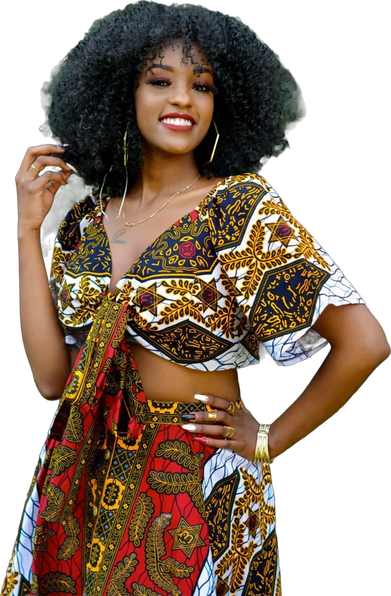
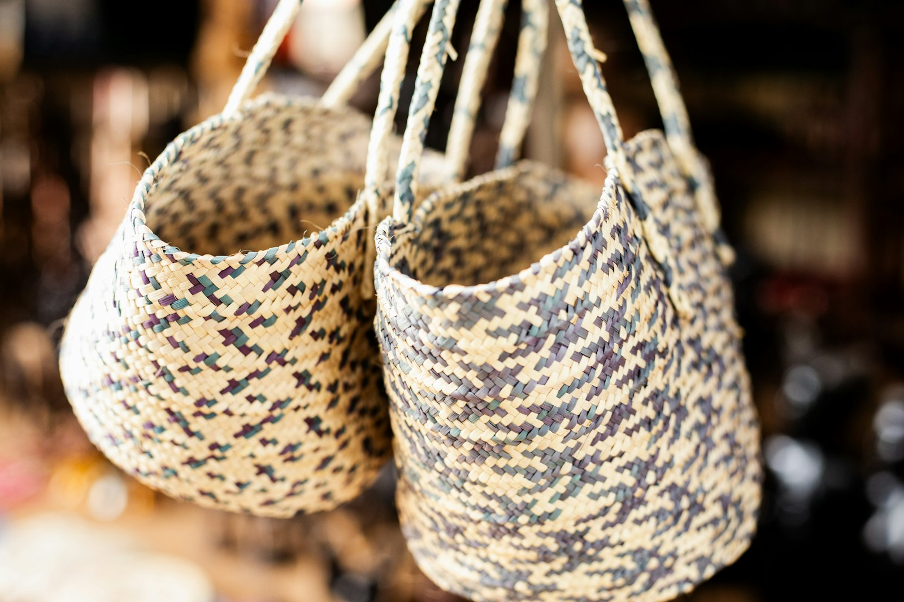

Raphia
Bustier Reine
Raphia naturel tissé main
Bustier sculpté, porté sur une jupe longue : la pièce signature de la maison.
Demander cette pièce →Chouchou Lazare transforme le raphia du Gabon, matière ancestrale réservée aux chefs et aux grandes cérémonies, en bustiers sculptés, jupes aériennes et silhouettes majestueuses.

Paris · Libreville
« Le raphia du Gabon, il est particulier. Il est tissé très fin, c'est un textile qui mérite d'être montré. »
Chouchou Lazare, Africanews, mars 2026
Du palmier à la robe →Raphia naturel tissé main
Bustier sculpté, porté sur une jupe longue : la pièce signature de la maison.
Demander cette pièce →Franges de raphia sur fond de soie
Une jupe qui danse à chaque pas, tout en légèreté.
Demander cette pièce →Raphia tressé et cousu
Silhouette longue et majestueuse, pour les grandes soirées.
Demander cette pièce →« N'importe qui peut porter du raphia. Ce n'est pas réservé aux Gabonais ou aux Africains. C'est ouvert à tout le monde. »
Chouchou LazareIl aide sa mère à la couture dès l'âge de neuf ans.
Il organise son premier défilé.
Premier prix du meilleur défilé à la Biennale internationale du design.
Président de l'Association des stylistes et créateurs gabonais.
Défilé à Libreville devant les présidents gabonais et français.
Achievement Award au Fashion Annual Show de Paris.
Mariage traditionnel, gala, défilé : chaque pièce est imaginée, tissée et ajustée à l'atelier, à vos mesures.